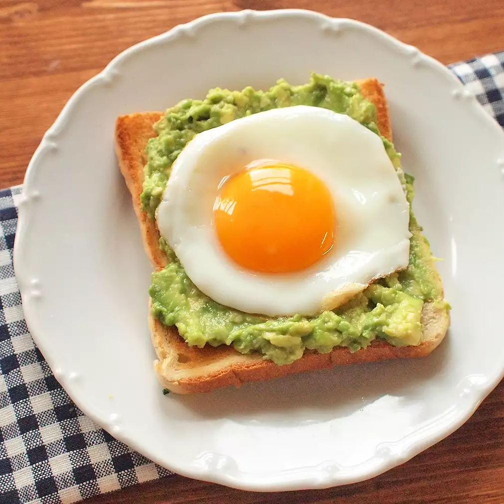

Title
Rychlá kuchařka
Vítejte na stránkách rychlé kuchařky. Zde najdete jednoduché recepty, které zvládnete připravit během několika minut.

1. Avokádový toast s vajíčkem
Ingredience:
1 zralé avokádo
2 plátky celozrnného chleba
1 vejce
Sůl a pepř podle chuti
Postup:
- Rozmačkejte avokádo a potřete jím plátky chleba.
- Na pánvi si připravte vejce podle svého gusta (volské oko, míchané, atd.).
- Osolte a opepřete avokádový toast a položte na něj vejce.
- Podávejte ihned.
Tip:
Pro extra chuť můžete přidat plátky rajčat nebo čerstvé bylinky.
Nutriční hodnoty (na porci):
- Kalorie: 250 kcal
- Bílkoviny: 12 g
- Tuky: 18 g
- Sacharidy: 20 g
Zobrazit plný recept